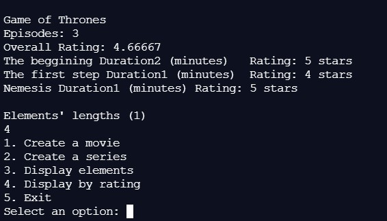
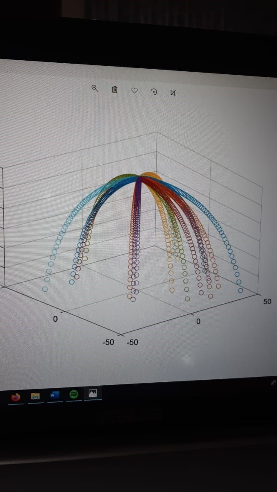
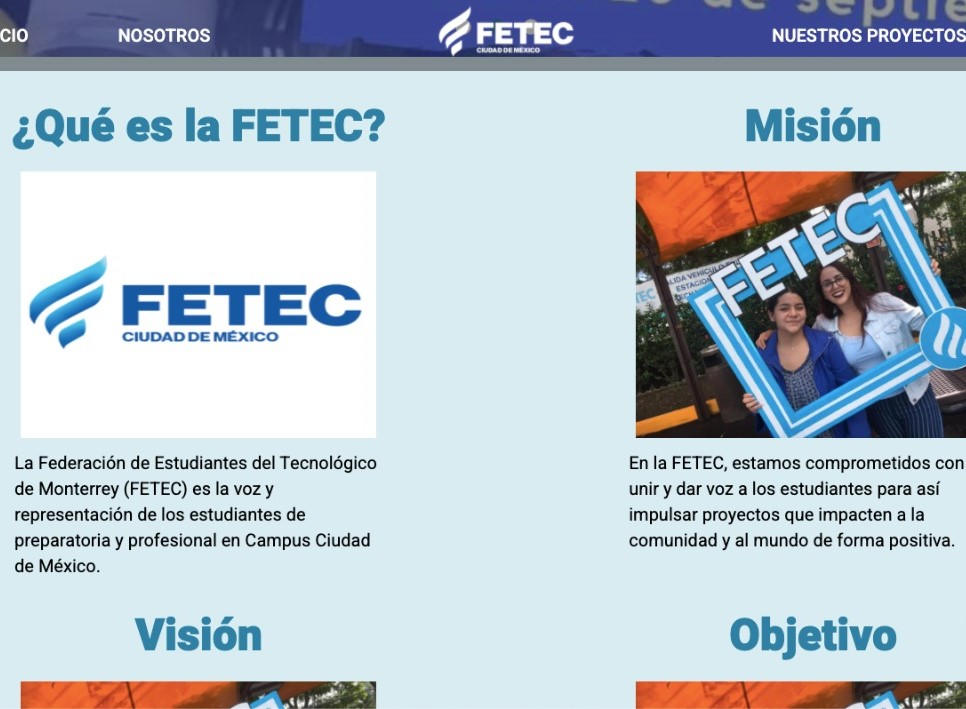

Python: Bajo
Matlbab: Intermedio
C++: Intermedio
HTML: Bajo
| Descripcion del Proyecto | Idioma | Fotos |
|---|---|---|
| Se realizo un programa que simulaba una pagina web al estilo Netflix donde el usuario podía buscar las películas por categoría, genero, rating o nombre. | C++ |  |
| En este proyecto se hizo una simulación de un volcán haciendo erupción. Lo mas notorio de dicha simulación era la física aplicada a la parábola de los fragmentos de roca saliendo del volcán. | Matlab |  |
| Se realizo un pequeño proyecto para un grupo estudiantil del Tecnológico de Monterrey. Yo trabaje en la parte del front end en la parte de HTML y CSS. | HTML y CSS |  |